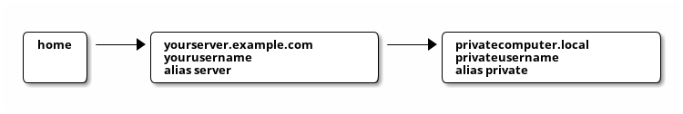

Configure SSH
Table of Contents
Did you ever get sick of typing the IP of your SSH server. There is an incredible feature of SSH that saves you a lot of time typing host names, IP addresses or passwords.
Login with SSH Key
First, you want to create your own SSH key so that your server accepts your login without any password.
# Create an SSH key (use the standard path). Be careful, if you do # not set a passphrase, anybody that has access to your computer can # log into servers that have been set up to accept your key. ssh-keygen # Copy the key on your server. ssh-copy-id yourusername@yourserver.example.com # Try it out and be happy! ssh yourusername@yourserver.example.com
Use ~/.ssh/config
Now, it is getting better; edit or create the file ~/.ssh.config:
Host server
HostName yourserver.example.com
User yourusername
Try to log into yourserver (now aliased server):
ssh server
Wow, that was fast.
ProxyCommand
And it can get better. Very often, the computer privatecomputer
that you want to log in, is only accessible from the local network but
not from the outside. However, you have access to server which,
in turn has access to private.

Hmm, normally, you would need to
# Log into the server. ssh yourusername@yourserver.example.com # Wait. Enter password. Wait. ssh privateusername@privatecomputer.local # Wait. Enter password. Wait. # That sucks.
We can setup SSH keys so that we do not have to enter passwords
- from
hometoserver(we already did that); - from
servertoprivatecomputer.local(you can do that now, if you want).
However, we can also do something much more awesome. Put this into
your ~/.ssh/config:
Host server
HostName yourserver.example.com
User yourusername
Host private
ProxyCommand ssh -q server -W privatecomputer.local:22
User privateusername
And try it out:
ssh private
Wow.